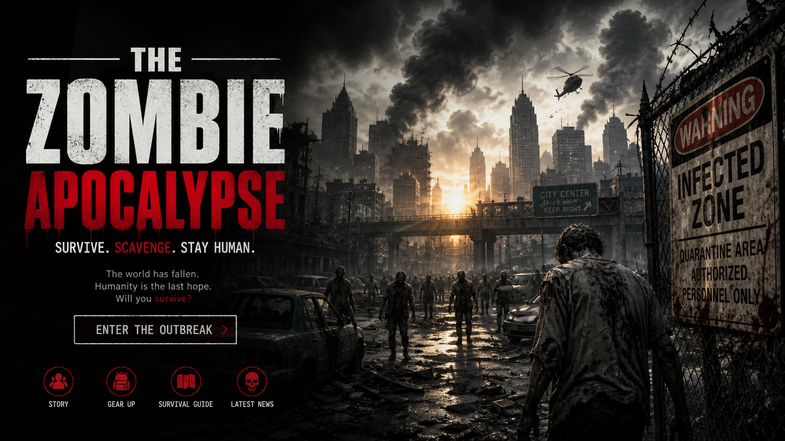

ORIGINAL QUIZ
Zombie Apocalypse Quiz
Think you could survive the initial outbreak? Make difficult choices involving shelter, resources, danger, and other survivors.
20 Choices
•
Survival Decisions
START QUIZ